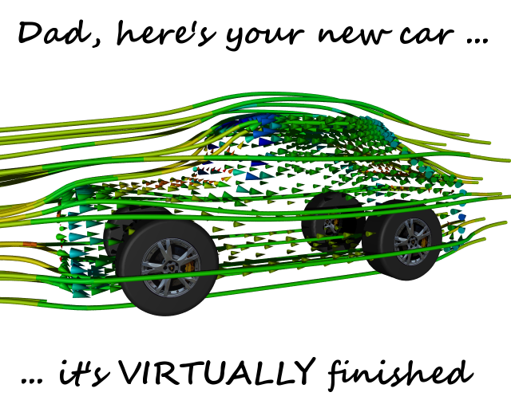

June 2007
If you've visited our website recently you'll have noticed a number of subtle enhancements, but before I get started on that ... don't forget it's Father's Day on June 17. Share our exclusive Father's Day graphic (created in Caedium with our Professional add-on) with him!

Now back to our enhancements.
We've integrated the Snap Shots service throughout our website. You'll now see a small bubble icon next to all links to external sites. A thumbnail preview of the linked site will appear when your cursor passes over the bubble icon. For Wikipedia articles the preview contains a text summary.
We've incorporated a Digg submission and voting widget into all our blog articles (see Vertical-Axis Wind Turbines for an example). That way you can easily share and rate our content with your Digg friends. You'll need a Digg login to use this widget. Digg is a community-driven news site, where stories are ranked according to readers' votes.
Virtually all our content now has a rating widget displayed at the end of each article. By rating each article you help others decide whether an article is worthy of their time. Also, the ratings help us determine what kinds of content you prefer.
On our home page you'll notice a poll widget in the right-hand sidebar. These multiple-choice polls are a great way for you to influence our business strategy.
Don't forget that you can leave comments with a specific article, or try posting a comment for discussion in our forum, or if you have a general comment – our contact form is ready and waiting.
We have introduced a new category of articles called tips which are short descriptions of Caedium functions that we think you'll find useful. Our first tip describes how to use Caedium to create a 3D stereoscopic image (anaglyph) for viewing with red/blue glasses.
For your convenience, here are the latest blog posts since our previous newsletter.
Vertical-Axis Wind Turbines
While clusters of horizontal-axis wind turbines are our primary weapon in the war to reduce greenhouse gas emissions to save the planet from the effects of global warming, there are other interesting wind turbine designs. Vertical-axis wind turbines come in a variety of shapes and sizes for those keen to take the path less travelled.
Read more
Anatomy of a Horizontal-Axis Wind Turbine
Today the most cost-effective means of capturing wind energy is a horizontal-axis wind turbine positioned on land or at sea in a proven windy area. Whether micro, personal or industrial – modern horizontal-axis wind turbines share the same basic features.
Read more
Wind Energy: Back to the Future
Global warming concerns have launched a renewable electricity-generation boom with sleek wind-turbine farms on land and at sea playing a leading role. Yet capturing wind energy using windmills is an ancient science that pre-dates the use of electricity. The invention of the windmill is variously attributed to the Babylonians (circa 1700BC) and the Persians (circa 600-900AD); either way it is still an ancient machine.
Read more
Build It Yourself
The democratization of technology isn't just about making things for less, to line the already full pockets of CEOs. The ubiquity of technology also allows hobbyists and students to build more for less. Nowhere is this truer than for aerodynamic gadgets such as cars, planes and even wind turbines!
Read more
Feedback
Questions? Ideas? Problems?